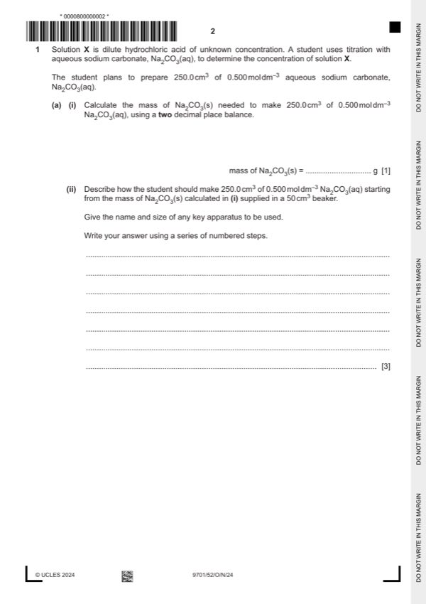

Question 1

Original paper page 2
Part 1(a)(i) — solution
13.25 g 1
Mark points
- Include the ideas shown in the solution above.
Part 1(a)(ii) — solution
- [M1] dissolve the solid / sodium carbonate (in the beaker) (using a small volume of) (distilled) water 3
- [M2] transfer / add to a (250 cm3 volumetric) flask
- [M3] top the 250 cm3 volumetric flask up to mark (with distilled water)
Mark points
- [M1] dissolve the solid / sodium carbonate (in the beaker) (using a small volume of) (distilled) water 3
- [M2] transfer / add to a (250 cm3 volumetric) flask
- [M3] top the 250 cm3 volumetric flask up to mark (with distilled water)
Part 1(b)(i) — solution
solution Y 1
Mark points
- Include the ideas shown in the solution above.
Part 1(b)(ii) — solution
indicator / methyl orange changes colour 1
Mark points
- Include the ideas shown in the solution above.
Part 1(b)(iii) — solution
to avoid spitting (of solid when it forms) 1
Mark points
- Include the ideas shown in the solution above.
Part 1(b)(iv) — solution
heat to constant mass 1
Mark points
- Include the ideas shown in the solution above.
Part 1(c)(i) — solution
Answer: 2
- [M1] burette readings 14.85 (cm3) and 1.35 (cm3)
- [M2] volume of solution X added = 13.50 (cm3)
Mark points
- [M1] burette readings 14.85 (cm3) and 1.35 (cm3)
- [M2] volume of solution X added = 13.50 (cm3)
Part 1(c)(ii) — solution
- working must be shown 100 = 0.741
Mark points
- working must be shown 100 = 0.741
Part 1(d) — solution
- [M1] Mr(NaCl) = 58.5 3
- [M2] n(HCl) = 0.02
- [M3] n(Na2CO3) = 0.02 / 2 = 0.01
Mark points
- [M1] Mr(NaCl) = 58.5 3
- [M2] n(HCl) = 0.02
- [M3] n(Na2CO3) = 0.02 / 2 = 0.01
Part 1(e) — solution
- [M1] calculated concentration of Y will be higher than the true value. 2
- [M2] mass / amount of NaCl (in step 7) will be too high
Mark points
- [M1] calculated concentration of Y will be higher than the true value. 2
- [M2] mass / amount of NaCl (in step 7) will be too high